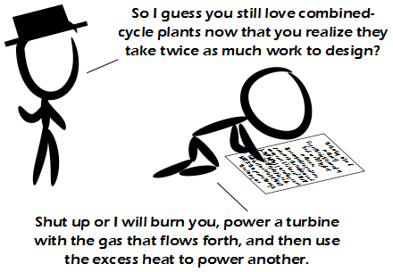

Comic JK 837
When I Feel Like It
⇤
<
?
>
⇥

⇤
<
?
>
⇥
Forum
.
RSS
.
Digg
.
Facebook
.
Reddit
.
Twitter
.
Stumbleupon
Enter your thoughts on number 0.837 here. Please, no spamming, trolling, or making comics with no actual punchline. Merry Christmas for those countries which celebrate the 26th > Boxing day? 24th is actually a lot better than 25th >Agweed. So wewy much. >> Nope. The 26th is actually the day of the year that gives you the longest possible time interval until having to hear "Grandma Got Run Over by a Reindeer" again - or dogs barking carols.... >>> Fuck that shit. Only the solstice on the 21/22 means a damn thing. >>>> The solstice is just as arbitrary as any other day. It's about tradition. >>>>> How is the solstice arbitrary? Practically every holiday EXCEPT ones tied to astronomy (equinox, solstice) are arbitrary. >>> I actually made it the entire season without hearing that song. But I can't count how many times I heard "Mommy Kissing Santa Claus" and "All I Want for Christmas Is My Two Front Teeth", and now I attest those are worse. >>>>I have never heard the second one but i hate the first who of you had a happy sinterklaas? > Ik! Yes, we Dutchmen celebrate the 25th, the 26th and also the 5th of December. And of course the last. +1 for Rankine! Your mother could power another with her excess heat. >Why must every comment box end with a your mother joke? >>We all know her. It's our inside joke. Or was it that someone wrote joke in her? I'll check tomorrow when I do her... >You do realise she'll take twice as much work, right? >>She will probably sodomize you with a strapon >>>Hey now, there's nothing wrong with that as long as it's consensual.